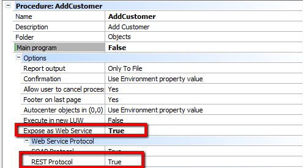
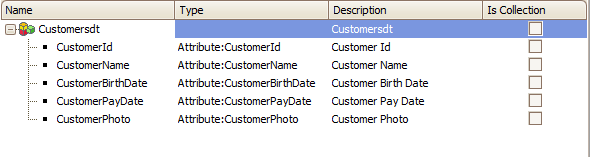

In a real-life situation, you will probably need to provide feedback about the operation to the user, so you can use a Business Component to perform actions in the database tables and return the operation results to the caller consumer. In the example, "AddCustomer" Procedure is declared as REST web service in GeneXus.
 It receives an SDT as parameter, containing the information of the customer to be added to the Customer table. IMPORTANT NOTE: Rest procedures can receive any type of parameters: simple or SDTs, collections or not. Parm Rule: parm(in:&Customersdt,out:&messages); Source: &Customer.Load(&Customersdt.CustomerId) if &Customer.Fail() &Customer = new() &Customer.CustomerId = &Customersdt.CustomerId endif &Customer.CustomerName = &Customersdt.CustomerName &Customer.CustomerBirthDate = &Customersdt.CustomerBirthDate &Customer.CustomerPayDate = &Customersdt.CustomerPayDate &customer.CustomerPhoto = &customersdt.CustomerPhoto &customer.Save() &messages = &customer.GetMessages() commit
 A GeneXus client for this REST procedure would be as follows:
&httpclient.Host = &host
&httpclient.Port = &port
&httpclient.BaseUrl = &baseurl
&body = '{"Customersdt":' + &customersdt.ToJson() + '}'
&httpclient.AddHeader('Content-type','application/json')
&httpclient.AddString(&body)
&httpclient.Execute('POST','AddCustomer')
Then process the HTTP Client response. NOTE: 1. The BaseURL for calling REST procedures is <webappname>/rest. See Also
|
| Backlinks | ||
| HowTo: Consuming a Procedure exposed as a Rest service | Procedures as REST: Sending blob data as input to the procedure | Toc:Rest web services in GeneXus |